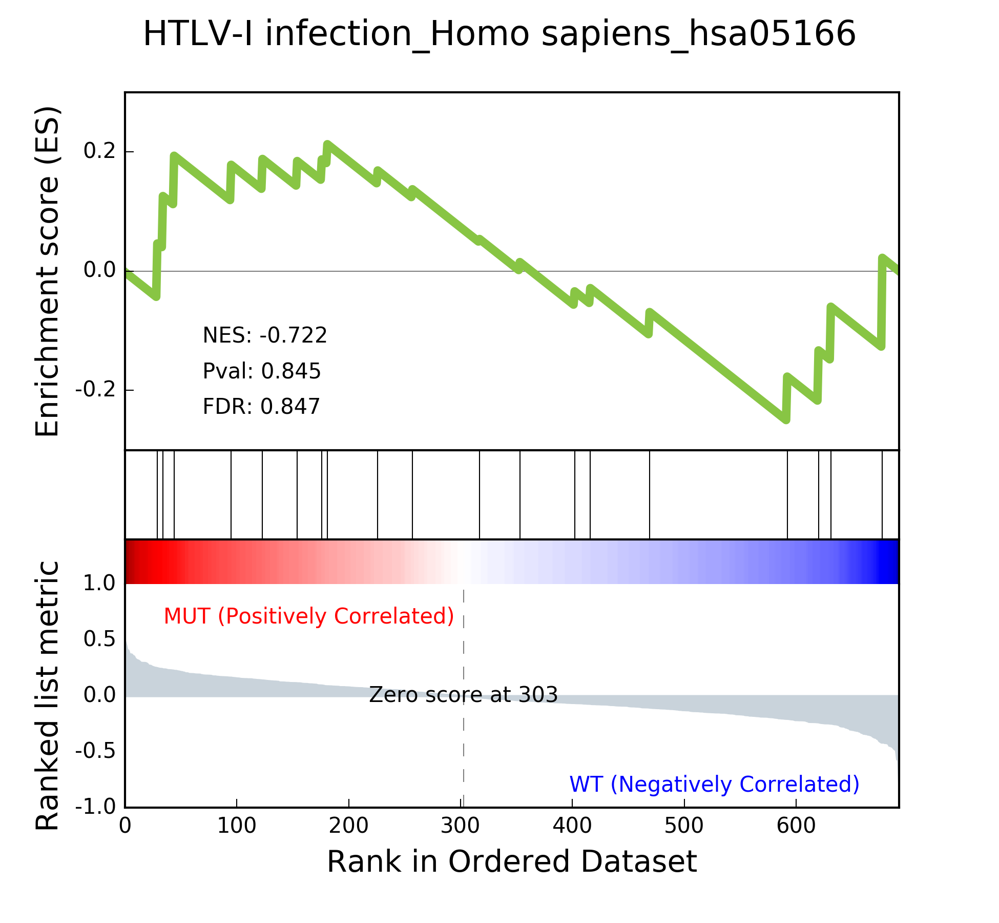
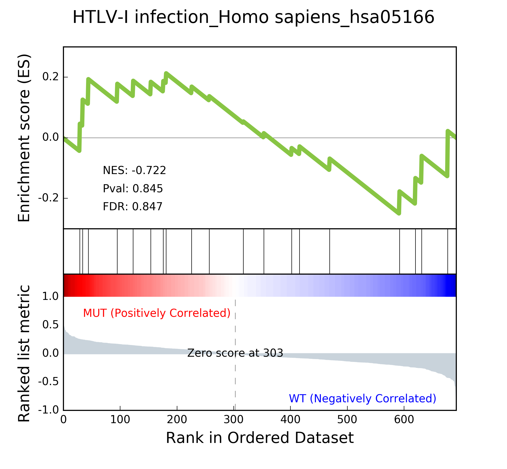

GSEAPY Example¶
See all gseapy supported enrichr library names¶
Enrichr library could be used for gsea, ssgsea, and prerank,
too
[u'ARCHS4_Cell-lines',
u'ARCHS4_IDG_Coexp',
u'ARCHS4_Kinases_Coexp',
u'ARCHS4_TFs_Coexp',
u'ARCHS4_Tissues',
u'Achilles_fitness_decrease',
u'Achilles_fitness_increase',
u'Aging_Perturbations_from_GEO_down',
u'Aging_Perturbations_from_GEO_up',
u'Allen_Brain_Atlas_down']
2. Enrichr Example¶
1) Assign enrichr with pd.Series, pd.DataFrame, or list object¶
| 0 | |
|---|---|
| 0 | CTLA2B |
| 1 | SCARA3 |
| 2 | LOC100044683 |
| 3 | CMBL |
| 4 | CLIC6 |
pandas.core.frame.DataFrame
['CTLA2B', 'SCARA3', 'LOC100044683', 'CMBL', 'CLIC6', 'IL13RA1', 'TACSTD2', 'DKKL1', 'CSF1', 'CITED1']
| Term | Overlap | P-value | Adjusted P-value | Old P-value | Old Adjusted P-value | Z-score | Combined Score | Genes | |
|---|---|---|---|---|---|---|---|---|---|
| 0 | Rap1 signaling pathway_Homo sapiens_hsa04015 | 19/211 | 0.000148 | 0.035223 | 0.000436 | 0.103734 | -1.961363 | 17.295956 | PDGFRB;CSF1;FLT4;VEGFC;ARAP3;LPAR4;ADCY7;ADCY6... |
| 1 | Pathways in cancer_Homo sapiens_hsa05200 | 27/397 | 0.000729 | 0.066282 | 0.001816 | 0.152127 | -2.083086 | 15.046848 | RET;LEF1;TGFA;LPAR4;ADCY7;ETS1;ADCY6;GLI2;FGF4... |
| 2 | Ras signaling pathway_Homo sapiens_hsa04014 | 18/227 | 0.000999 | 0.066282 | 0.002351 | 0.152127 | -1.956845 | 13.519663 | PDGFRB;CSF1;FLT4;VEGFC;ETS1;GNG13;FGF4;PLD2;EF... |
| 3 | Dilated cardiomyopathy_Homo sapiens_hsa05414 | 10/90 | 0.001114 | 0.066282 | 0.002557 | 0.152127 | -1.805957 | 12.280169 | DES;SGCB;TPM2;TNNC1;LMNA;TPM1;ITGAV;ADCY7;ADCY... |
| 4 | HTLV-I infection_Homo sapiens_hsa05166 | 19/258 | 0.001747 | 0.083151 | 0.003877 | 0.184562 | -1.843079 | 11.703417 | PDGFRB;STAT5B;EGR1;JUN;CD40;FZD2;CRTC3;NFATC1;... |
2) Command line usage¶
You may also want to use enrichr in command line
the option -v will print out the progress of your job
2017-11-24 13:11:55,413 Connecting to Enrichr Server to get latest library names
2017-11-24 13:11:56,232 Analysis name: BP2017, Enrichr Library: GO_Biological_Process_2017
2017-11-24 13:11:58,805 Submitted gene list:{'shortId': '350iz', 'userListId': 6127777}
2017-11-24 13:12:04,922 Downloading file of enrichment results: Job Id:{'shortId': '350iz', 'userListId': 6127777}
2017-11-24 13:12:08,329 Warning: No enrich terms using library GO_Biological_Process_2017 when cuttoff = 0.05
2017-11-24 13:12:08,329 Done.
3. Prerank example¶
1) Assign prerank() with a pd.DataFrame, pd.Series , or a txt file¶
Do not include header !
GSEApy will skip any comment lines startswith “#”.
Only contains two columns, or one cloumn with gene_name indexed when
assign a
DataFrame to prerank| 0 | 1 | |
|---|---|---|
| 0 | CTLA2B | 2.502482 |
| 1 | SCARA3 | 2.095578 |
| 2 | LOC100044683 | 1.116398 |
| 3 | CMBL | 0.877640 |
| 4 | CLIC6 | 0.822181 |
| es | nes | pval | fdr | gene_set_size | matched_size | genes | |
|---|---|---|---|---|---|---|---|
| Term | |||||||
| DvA_UpIN_A | 0.405880 | 1.590404 | 0.015873 | 0.075188 | 284 | 19 | ABHD14B,VNN1,NELF,MARVELD2,LAMB3,TMPRSS2,TM6SF... |
| DvA_UpIN_D | 0.166924 | 0.626715 | 0.842857 | 0.872180 | 236 | 21 | PMP22,STBD1,DUSP14,RET,GPX8,CHRNB1,PRKD1,COL7A... |
<matplotlib.axes._subplots.AxesSubplot at 0x10dbb69d0>

1) Assign gsea() with a pandas DataFrame, .gct format file, or a text file¶
and cls with a list object or just .cls format file
['MUT', 'MUT', 'MUT', 'MUT', 'MUT', 'MUT', 'MUT', 'MUT', 'MUT', 'MUT', 'MUT', 'MUT', 'MUT', 'MUT', 'MUT', 'MUT', 'MUT', 'MUT', 'MUT', 'MUT', 'MUT', 'MUT', 'MUT', 'MUT', 'MUT', 'MUT', 'MUT', 'MUT', 'MUT', 'MUT', 'MUT', 'MUT', 'MUT', 'WT', 'WT', 'WT', 'WT', 'WT', 'WT', 'WT', 'WT', 'WT', 'WT', 'WT', 'WT', 'WT', 'WT', 'WT', 'WT', 'WT']
| NAME | 786-0 | BT-549 | CCRF-CEM | COLO 205 | EKVX | HCC-2998 | HCT-15 | HOP-62 | HOP-92 | ... | MCF7 | MOLT-4 | NCI-H460 | OVCAR-4 | SF-539 | SK-MEL-5 | SR | UACC-257 | UACC-62 | UO-31 | |
|---|---|---|---|---|---|---|---|---|---|---|---|---|---|---|---|---|---|---|---|---|---|
| 0 | CTLA2B | 111.19 | 86.22 | 121.85 | 75.19 | 208.62 | 130.59 | 124.72 | 324.09 | 242.71 | ... | 163.76 | 59.50 | 134.12 | 152.09 | 197.46 | 137.79 | 81.53 | 123.37 | 81.41 | 180.78 |
| 1 | SCARA3 | 460.30 | 558.34 | 183.55 | 37.29 | 158.00 | 43.61 | 80.83 | 300.08 | 1250.25 | ... | 109.91 | 120.42 | 73.06 | 115.03 | 95.12 | 37.56 | 76.16 | 41.10 | 77.51 | 519.17 |
| 2 | LOC100044683 | 97.25 | 118.94 | 81.17 | 119.51 | 119.88 | 107.73 | 165.57 | 203.97 | 135.43 | ... | 222.84 | 124.98 | 114.75 | 141.66 | 170.19 | 147.70 | 157.48 | 152.18 | 98.89 | 118.06 |
| 3 | CMBL | 33.45 | 55.10 | 221.67 | 50.30 | 35.12 | 75.70 | 84.01 | 44.12 | 79.96 | ... | 51.32 | 117.11 | 59.46 | 78.46 | 45.55 | 49.07 | 96.69 | 33.09 | 10.38 | 52.89 |
| 4 | CLIC6 | 35.75 | 41.26 | 63.04 | 219.86 | 42.53 | 54.19 | 86.98 | 71.20 | 53.89 | ... | 154.05 | 31.62 | 37.66 | 32.64 | 63.35 | 27.95 | 70.99 | 36.25 | 17.50 | 49.41 |
5 rows × 51 columns
('positively correlated: ', 'MUT')
('negtively correlated: ', 'WT')
| es | nes | pval | fdr | gene_set_size | matched_size | genes | |
|---|---|---|---|---|---|---|---|
| Term | |||||||
| MAPK signaling pathway_Homo sapiens_hsa04010 | -0.392928 | -1.270760 | 0.166667 | 0.474684 | 255 | 18 | GADD45B,RRAS,SOS2,FGF17,PPP3CC,TNFRSF1A,PDGFRB... |
| HTLV-I infection_Homo sapiens_hsa05166 | -0.249752 | -0.790485 | 0.818182 | 0.743671 | 258 | 19 | FZD2,ETS1,STAT5B,RRAS,LTBR,PPP3CC,TNFRSF1A,EGR... |
| Rap1 signaling pathway_Homo sapiens_hsa04015 | -0.285975 | -0.914519 | 0.609756 | 0.873418 | 211 | 19 | RRAS,VEGFC,CSF1,FGF17,PDGFRB,FGF4,PDGFC,SIPA1L... |
| PI3K-Akt signaling pathway_Homo sapiens_hsa04151 | 0.182245 | 0.590397 | 0.978723 | 0.968750 | 341 | 22 | GNG13,VEGFC,GNB4,CSF1,SOS2,FGF17,THBS4,PDGFRB,... |
| Cytokine-cytokine receptor interaction_Homo sapiens_hsa04060 | 0.229069 | 0.670014 | 0.884615 | 1.000000 | 265 | 18 | IL10RB,VEGFC,CSF1,TNFSF12,LTBR,CXCL10,TNFRSF1A... |
2) Show the gsea plots¶
The gsea module will generate heatmap for genes in each gene sets in the backgroud.
 

3) Command line usage¶
You may also want to use gsea in command line
5. Single Sample GSEA example¶
Note: When you run ssGSEA, all genes names in your gene_sets file should be found in your expression table
1) Assign ssgsea() with a txt file, dataframe, or Seires(gene name as index).¶
| 0 | 1 | |
|---|---|---|
| 0 | ATXN1 | 16.456753 |
| 1 | UBQLN4 | 13.989493 |
| 2 | CALM1 | 13.745533 |
| 3 | DLG4 | 12.796588 |
| 4 | MRE11A | 12.787631 |
| 1 | |
|---|---|
| 0 | |
| ATXN1 | 16.456753 |
| UBQLN4 | 13.989493 |
| CALM1 | 13.745533 |
| DLG4 | 12.796588 |
| MRE11A | 12.787631 |
pandas.core.frame.DataFrame
pandas.core.series.Series
| es | nes | pval | fdr | gene_set_size | matched_size | genes | |
|---|---|---|---|---|---|---|---|
| Term | |||||||
| hsa05205 | 0.341007 | 13.452099 | 0.0 | 0.0 | 203 | 201 | CTNNB1,PRKACA,GRB2,EGFR,RAC1,PRKCA,KRAS,CD44,M... |
| hsa05412 | 0.290588 | 9.710331 | 0.0 | 0.0 | 74 | 74 | CTNNB1,ACTB,ITGB1,CACNG3,RYR2,CTNNA1,CACNA2D3,... |
| hsa05410 | 0.270626 | 10.461864 | 0.0 | 0.0 | 83 | 83 | ACTB,ITGB1,TPM3,CACNG3,RYR2,CACNA2D3,ITGAV,ITG... |
| hsa05323 | 0.166596 | 5.752460 | 0.0 | 0.0 | 89 | 89 | JUN,ITGB2,ATP6V1B2,ATP6V1E1,IL1A,TGFB1,TEK,ATP... |
| hsa05322 | 0.176818 | 7.742502 | 0.0 | 0.0 | 134 | 134 | GRIN2B,H2AFX,ACTN1,HIST4H4,SNRPD1,C3,GRIN2A,SS... |
2) ssgsea supports gene expression matix in gct format.¶
if gene expression matrix is provided, ssgsea works like pandas
apply(),
which means it will compute NES,FDR … for every sample pairwise.
finally, you can assces the reuslts through resultsOnSamples
attribute.
Take previous gene_exp dataframe for example
| NAME | 786-0 | BT-549 | CCRF-CEM | COLO 205 | EKVX | HCC-2998 | HCT-15 | HOP-62 | HOP-92 | ... | MCF7 | MOLT-4 | NCI-H460 | OVCAR-4 | SF-539 | SK-MEL-5 | SR | UACC-257 | UACC-62 | UO-31 | |
|---|---|---|---|---|---|---|---|---|---|---|---|---|---|---|---|---|---|---|---|---|---|
| 0 | CTLA2B | 111.19 | 86.22 | 121.85 | 75.19 | 208.62 | 130.59 | 124.72 | 324.09 | 242.71 | ... | 163.76 | 59.50 | 134.12 | 152.09 | 197.46 | 137.79 | 81.53 | 123.37 | 81.41 | 180.78 |
| 1 | SCARA3 | 460.30 | 558.34 | 183.55 | 37.29 | 158.00 | 43.61 | 80.83 | 300.08 | 1250.25 | ... | 109.91 | 120.42 | 73.06 | 115.03 | 95.12 | 37.56 | 76.16 | 41.10 | 77.51 | 519.17 |
| 2 | LOC100044683 | 97.25 | 118.94 | 81.17 | 119.51 | 119.88 | 107.73 | 165.57 | 203.97 | 135.43 | ... | 222.84 | 124.98 | 114.75 | 141.66 | 170.19 | 147.70 | 157.48 | 152.18 | 98.89 | 118.06 |
| 3 | CMBL | 33.45 | 55.10 | 221.67 | 50.30 | 35.12 | 75.70 | 84.01 | 44.12 | 79.96 | ... | 51.32 | 117.11 | 59.46 | 78.46 | 45.55 | 49.07 | 96.69 | 33.09 | 10.38 | 52.89 |
| 4 | CLIC6 | 35.75 | 41.26 | 63.04 | 219.86 | 42.53 | 54.19 | 86.98 | 71.20 | 53.89 | ... | 154.05 | 31.62 | 37.66 | 32.64 | 63.35 | 27.95 | 70.99 | 36.25 | 17.50 | 49.41 |
5 rows × 51 columns
Results for all samples are saves to a dataframe,
you can assces the reuslts through resultsOnSamples attribute.
| 786-0 | A498 | A549/ATCC | ACHN | BT-549 | CAKI-1 | CCRF-CEM | COLO 205 | EKVX | HCC-2998 | ... | SN12C | SNB-19 | SNB-75 | SR | SW-620 | T-47D | U251 | UACC-257 | UACC-62 | UO-31 | |
|---|---|---|---|---|---|---|---|---|---|---|---|---|---|---|---|---|---|---|---|---|---|
| CDX2 OE-SPECIFIC | 0.029866 | 0.009337 | 0.009991 | -0.006401 | 0.021200 | 0.004605 | 0.040562 | -0.000645 | -0.038442 | 0.034446 | ... | 0.004149 | 0.070998 | 0.013445 | 0.024796 | 0.040438 | 0.020149 | 0.046420 | 0.068213 | 0.074007 | 0.004254 |
| ES-SPECIFIC | -0.034765 | -0.064445 | -0.093547 | -0.079831 | -0.087688 | -0.029811 | -0.134692 | -0.072833 | -0.094930 | -0.041915 | ... | -0.105478 | -0.070089 | -0.052564 | -0.147355 | -0.084841 | -0.109212 | -0.068695 | -0.063946 | -0.109282 | -0.031117 |
| GATA3 OE-SPECIFIC | 0.006017 | 0.020498 | -0.002182 | -0.031979 | 0.019852 | -0.013829 | -0.000989 | 0.031977 | 0.016550 | 0.040318 | ... | 0.006542 | 0.007366 | -0.011697 | 0.000496 | 0.017734 | 0.018743 | -0.013939 | 0.004336 | 0.010753 | -0.029823 |
| HDAC1 UNIQUE TARGETS | -0.031270 | -0.003659 | -0.012545 | -0.042056 | -0.025924 | -0.037497 | 0.010344 | -0.030242 | -0.023006 | -0.030458 | ... | -0.054006 | -0.042326 | -0.039184 | -0.000971 | -0.052314 | -0.022150 | -0.013882 | 0.028718 | -0.010532 | -0.036023 |
| OCT4 KD-SPECIFIC | -0.032486 | -0.041851 | -0.032199 | -0.041748 | -0.007263 | -0.033633 | 0.009335 | -0.008391 | -0.027491 | -0.006586 | ... | -0.039470 | -0.016508 | -0.035164 | 0.025732 | -0.008062 | -0.011654 | -0.022169 | -0.009253 | -0.010288 | -0.047723 |
5 rows × 50 columns